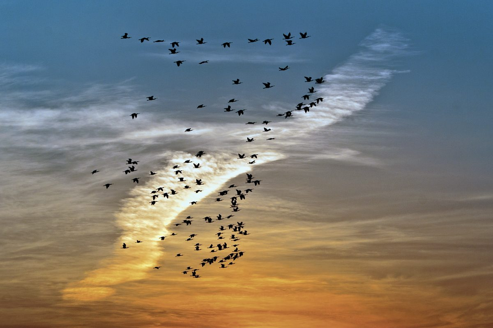
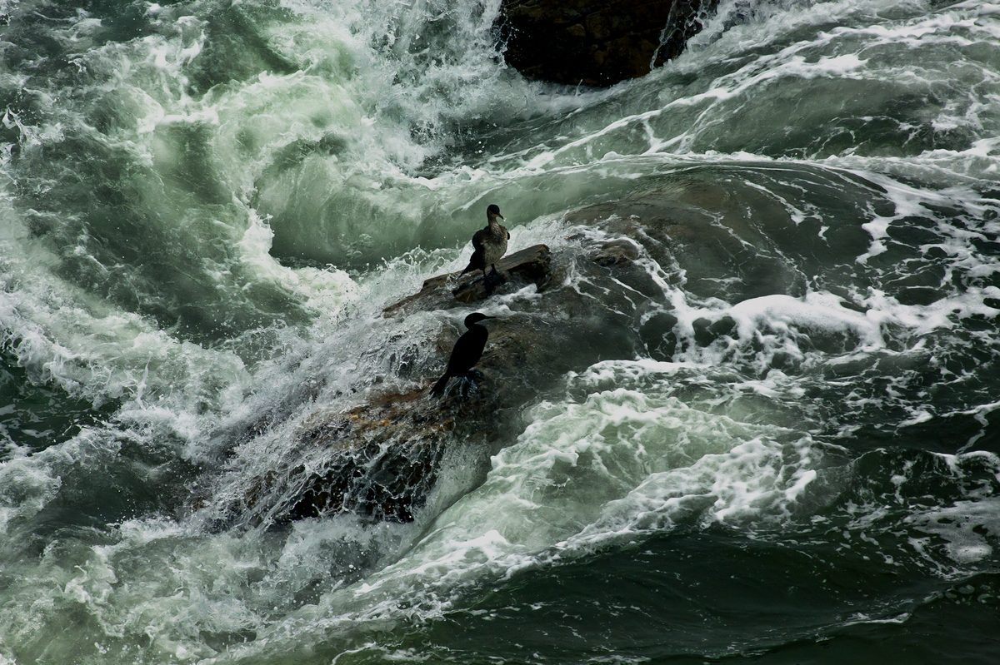
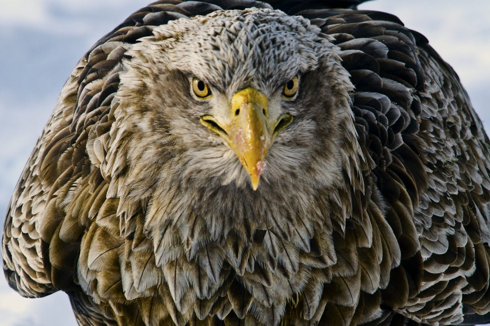
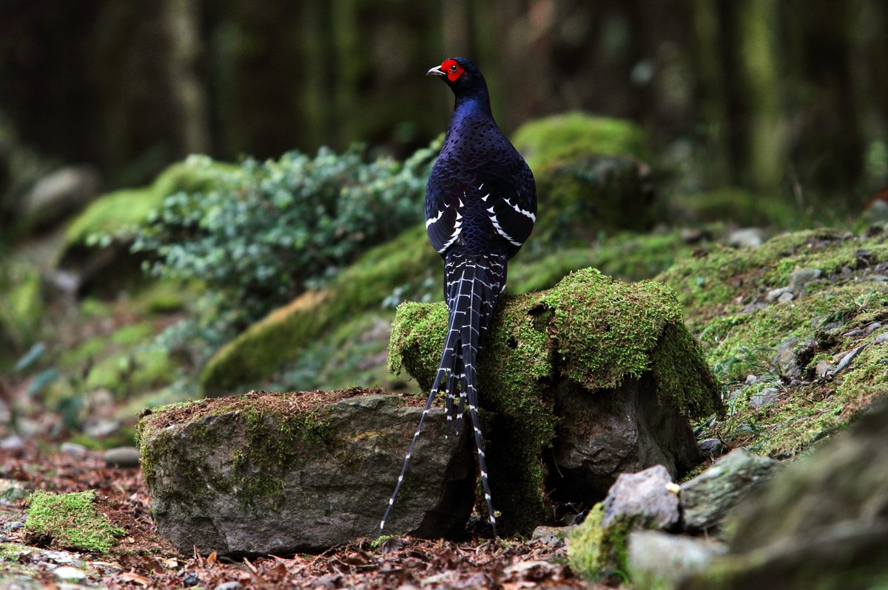

----看王徵吉的「野鳥詩情攝影展」
攝影者總想拍出詩情畫意的照片，攝影家王徵吉也是如此地想。在出版數本攝影集的封面，他都選富詩意、有畫境的作品。王最善長於拍攝黑面琵鷺，人稱黑琵（happy）先生。近日，在歸仁文化中心，以野鳥為主，以短詩為輔，作了示範性質的生態攝影展。
◆ 攝影和詩，都是藝術範疇，可有共同思想、共同意旨和共同感情，可以相輔相成，也可作賓主盡歡的表現，自是相融相契的美麗搭檔；然而，攝影展罕見這種形式表達。攝影和詩之間，或許有巧妙的趣味內容，足以互相和諧愉悅的對話；不過，生態攝影，不但要對藝術交待，還要對科學負責，在具備系統性、可交通性、可測量性及客觀性的科學屬性下，即使擁有「真的感情化」及「感情化的真」的產物，能對應多少畫中有詩、詩中有畫的美感情趣呢？王或許嘗試將生態攝影表現的難度柔軟化，藉詩圓融擴展多面向的心理想像空間吧！
◆ 創作生態作品，他控性極大，由主體的選擇，到背景的情緒氣氛的呼應，終於光線的語言描繪，莫不受制於外界現象，和主知感性、理性實驗，特異甚或獨立存在不需他人瞭解的表現手法，表達出無盡的音樂性語言的意味，及可以達到情盡乎辭的現代詩之間的距離，有如鴻溝。王或許也試著將按快門的藝術情懷，藉著詩一起綻放內在的自我體驗與感覺，和詩一起創造嶄新的意境，表現生命真理，令他控性的束縛，得以超越，並建設、光大更為深層的美感情操。
◆ 展場擺飾簡單，氣氛莊重典雅，聚光燈照是看照片的理想光源；看起詩來，有點為難讀者，情境不方便之外，也不太恰當。照片有大有小，顯現內容空間，也那麼大似的；百字內的小詩，自由揮灑在高山，同時也在大海，可作海濶天空、天花亂墜的描述，詩作者和讀者雙方的想像總量既大且遠，是光圈快門無可比擬的。攝影者得以永恒追尋刹那，刹那才能成為永恒，簡直無暇，也不能期待和觀賞者發生多餘的想像機緣；而詩作的格局，自身已訂出大小和長短。王或許以詩打破有限性的攝影時空表現的缺失，和詩攜手走進無盡的深情和永遠的光明。
生態攝影對畫面的表達範圍，僅在有限的「時」，局限的「空」，當下的情境，雖然可以利用有限錯覺改變時間，利用「完成」原則加大空間，以「梅花假橫幅之美」的技巧，美化拍攝內容，終離不開將客觀發生事件，作理性描述而已，連背景決定都是被動的。而一首詩，作者可以自由選擇的重整時間的長短，和空間的大小的物理性質，無拘又無束，坦蕩蕩地進入可以分割的心理及心靈時空的邏輯排序和再現。生態攝影作者的思想與意旨，在按快門時是難以產生的，只有藉著照片與讀者共同創造的想像（感知作用）之中，將意念價值定格在快門瞬間，作審慎的回饋與探討。作者與讀者即使有交集的知識和經驗，能共同完成藝術想像的思維活動，知覺的選擇性作用，也使得生態作品狹隘其美感的價值判斷，何況，通常在按快門之前，才是作者意念的凝聚點，而非快門呈現出的畫面，成為和讀者共同想像的內容。生態攝影提供讀者充分後設認知的欣賞模式，對詩言，往往只是自由想像的起點而已。王的「鳳雲飄，琵鷺飛」等作品，用想像的象徵手法，將詩與照片同步塑成更大更廣的心理與物理，創作與欣賞合一的時空藝境，是用心良苦的。
詩，可以從經驗的想像，發展出推理的、聯想的、象徵的想像來，一陣小風，可以掀成大浪，自然而富情趣，不拘謹、不尷尬，時間空間可以一致，可以相關，甚至分置處理，也不會產生次序問題，在想像中，仍可再想像成另類時空情境，不論真實的想像或想像的真實，主觀領域完全包容。故詩與對科學負責的生態攝影之間，除天機清妙者能將二者並列並序，共敍共述外，莫非是格格不入的兩個世界。沒有畫面的「詩中有畫」的情愫，豈能容許特定的刹那，具像且有限到極點的時空中，擠出「畫中有詩」的洐生想像世界，共舞於藝術的大家庭裏。吾人可以有意識的對詩作想像思維，即使超過詩素材的情感極限，讀者仍可以作感性推理之外的神奇聯想；無邊地想像，依然能夠在藝術情趣裏蕩漾著漣漪，感動作者，也感動讀者。然而「照片會說話」，也許具有弦外之意，對生態照片言，似乎只剩下「精彩」罷了，意外之境，不知如何尋找？由誰來找？又誰能找到呢？王的生態攝影和詩的對話，是令人佩服的大胆嘗試，不論成功或失敗，至少二者作了有情有意的對話，讀者感受到對話，並加入聊天，正是王的祈求和盼望。
文字表現，本質上就是抽象的，和具體形相呈現之間的重疊性太低，即使重疊，在境界上也是低層面的；同是詩情畫意，是由詩導引到照片？還是照片引發詩情呢？其間的方向張力和感動深度不言可喻。詩能強化具體畫面的抽象思維能力；「詩中有畫，畫中有詩」讓人誦吟不絶，效果相加相乘，若與「風景如畫，畫如風景」的栩栩如生的情思，一舉投契於大腦的心像中心時，似乎真正表現詩與攝影合一的境界。此時此境，在照片上不論用哪種思考方式，都面臨感性邏輯與理性邏輯相互矛盾的感動。除非，攝影和詩用高層次的聯覺作用，具體和抽象，相得益彰地合為一體。王的大胆「演出」是因為這樣嗎？
詩的讀者，對詩的欣賞，由素材開始，就能自然無拘束地想像作者的想像，思想作者的思想，自在地向四面八方盡情奔放、擴散、超越了思維邊界也情趣非常。生態照片，不必思考就能知覺，作者的引喻手法、象徵技巧、甚至具戲劇性表達的內容「一看便知」。試想：看過照片等於意會作品，不入深度思考歷程，如何令人感動？故生態作品，淪為要求知覺素材或形相的細膩度，大過弦外之意的思想探索；生態題材，總在紀錄食衣住行的紀念照上打轉，畫面的精彩意旨努力取代動人心弦的哲思境界。
生態攝影的構圖，可以選擇，但不能安排；可以放棄拍照，不會有遺珠 之憾。構圖抉擇歷程的美感價值的大小，境界的高低，取決於表現什麼，如何表現的故事，大過構圖自身的美感要求。用人像攝影態度，評鑒生態照片是愚蠢的。而一首詩的結構，可以平鋪直敍，也可以會意組合；可以前後呼應，也能夠左右逢源，用語言善加描繪即可。攝影的語言，當然可以多面向表述，但，如何與詩平起平坐？王的展覽，放在右下角的詩句，不知詩作者梅亞麗是什麼的心情？
無疑地，藝術的情感質素，無分軒輊的庇蔭在詩和攝影上。不論是主觀意念或客觀觀照，詩作者可用自發性的熱情，也可用自我剝離的情懷，冷靜客觀描繪事實。生態攝影創作，永遠是旁觀者似的，表現客觀之餘，總想把右腦思維的主觀感情，打進畫面各個角色上。試想「無情荒地有情天」一詞，所需條件，是客觀存在的嗎？天文學家可以探求量子力學，找尋宇宙起源，難道攝影的基本技能元素，就能展現藝術的全部情感內含嗎？表現藝術的工具，能決定情感創作的範圍嗎？還是素材範圍和情感之間，無形、有形的障礙難以跨越？令生態攝影只能客觀紀錄事件的發生！已知劇作者能藉劇中角色的個性和對話，甚至動作或表情，傳遞劇作者個人的意念；生態攝影者的拍攝對象角色上，要能攜帶情感、真實的情感、高尚的情感、偉大的情感，感動作者之同時，感動讀者。前提是攝影者能投射多少感情在對象上呢？當畫面角色接收、接受感情的賦予，融會貫通後，在相機和生態攝影者面前，將最真摯有力的情感，透過光圈快門進入感光體，與攝影者共同完成創作。情感作用於無生命、有生命的山水草木，蟲魚鳥獸上，轉化成真實的情感的創造，作品生命油然而生。王作品的文學氣息是由情感培育出來的，詩幫助他擴而大之，發揮情感的魅力和價值，進而充實生命。
人生素材就是文學內容，素材充分，資源豐富，成就自成其大。素材可簡分成感覺的、心靈的、和自然的素材。詩能輕鬆含蓋。生態攝影素材，僅能以看得到、摸得著的有限生態具像物中，能表現出來的為原則。王專情於人生，攝影心廣擴、意深邃，願能成就像詩一般的人生，拍出攝影素材的詩情，是最高理想，不足之處，靠文學的詩輔佐。
詩與生態攝影具有迥然不同的語言形式，在創造動人有生命力的潛能內容方面，是一樣有魅力的，心靈的感性契合是互通的。二者均可達到簡潔、優美、新鮮和生動的境地。王的作品展出有了錦上添花、異曲同工的加分效果，展出形式有了風格的發展。明朗而直接的生態攝影，和含蓄內歛的詩詞，分別滙聚於作者和讀者內心深處，作統整性的消化、融合和創造，充實可變可新的生命內涵。
************ ************ ************
兩種藝術的分支產物，自有其異同處。現代詩將傳統的情緒、意象、知識、經驗及詩思，予以批判或揚棄，進而轉化出具無盡意味、形式簡潔的新意義精神的世界來。生態攝影的「影思」如同「詩思」。詩思由內而外表顯，有一定次序，以致於成功。「影思」和成功的距離，是非線性的，相關係數不是很高，便是很低。擁有過去知能，不一定創出將來作品，作品和靈感也不必發生必然關係，意外的快門成就和苦心經營的拍攝，不一定是學習的有效聯結得來的產物。有修養的生態攝影者是效忠於科學的前提下，執著於藝術創作。吾人但求兩者相通且殊途同歸；各異其趣，可表現藝術多樣性差異的鑑別價值。若不同藝術間能以「蒙太奇」形式，會意重組成另一種新奇而周延的藝術形態，則人類幸福又向前進了一步。當年王徵吉以卷軸式裱框，展示攝影作品，令人驚艷；今日以詩相伴與影像對話，教人感佩。本人能成為其弟子，三生之幸。大言不慚，論詩與攝影，實屬心得報告，隨興疾書，望讀者包涵。
“鳯雲飄 琵鷺飛” 攝影 王徵吉 語喃喃渾然天成的大地 .....梅亞麗美夢成真時漸漸習慣慢活的態度享受奢華寧靜奪目的它彩炫麗忽見 雲鵬萬里道不盡鶯嘀燕語相呼應渴望，渴望，不能止息的渴求美景森羅萬象好壯麗細節迷人縈繞不去烙心底
海鸕鶿 攝影 王徵吉 享受無懼 ......梅亞麗湍湍水急流佇似逆境 逞強自命不凡的悠哉艱難隱藏難掩殷殷盼彼端匯聚水波撞 不散浪濤盡不過爾爾
白尾海鵰 攝影 王徵吉 隱匿在大自然種種事務之後 的唯一......梅亞麗如果 不免孤獨如果 不免刻苦如果 相遇不是偶然如果 面對不曾退卻我在專注的眼神下交會逞強在自然的偽裝我願
黑長尾雉 攝影 王徵吉 意..........梅亞麗靜 在此境境 在不遠盡 在不言



